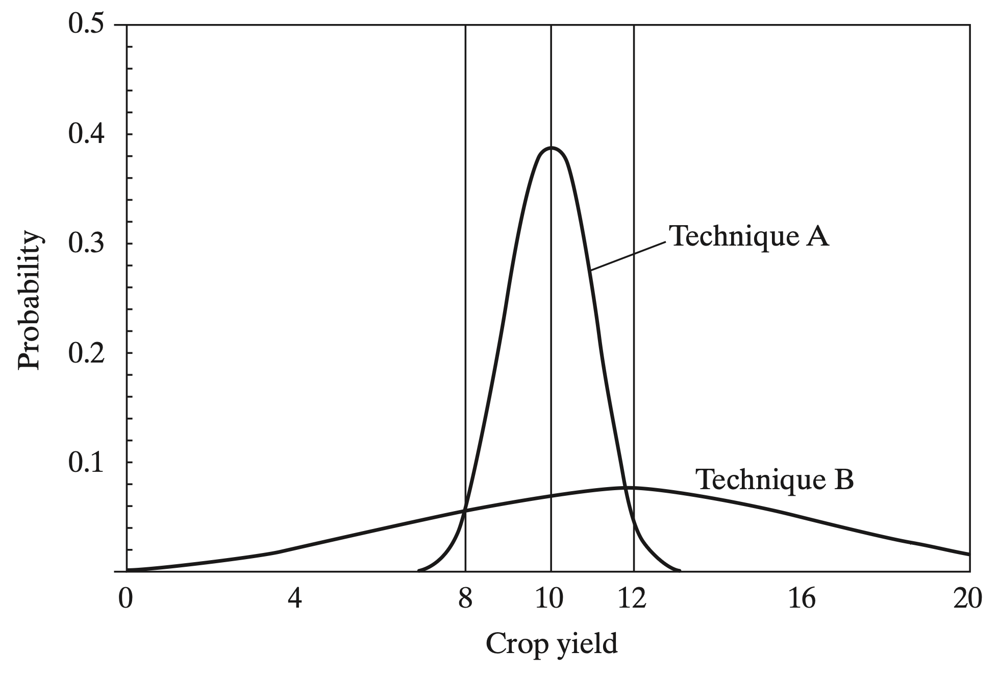

Microeconomics of Farming
Classical Theory has two factor models of production where capital is fixed, but labor is variable
- Households can adjust how much they work on their farm, but not what tools they use
- Gives rationale for low productivity
- Does not explain why small farm owners are resistant to technological innovation
- Theory says they will choose the method of production that gives the lowest cost
- Also implies perfect knowledge of types of technology, needed inputs, the weather, etc.
Microeconomics of Farming
The problem is that classical theory of agricultural production does not consider farmer’s uncertainty
Which would you prefer?
10 dollars with certainty
50% chance of getting 30 dollars and 50% chance of paying 10 dollars
- Both have the same expected payoff
- But the first has more consistent outcomes
- People tend to be risk-averse
- Do not like uncertaincty/variance in their outcomes
Microeconomics of Farming
Take the following farming techniques
Technique A
- Offers a lower average yield
- Low variance
Technique B
- Offers a higher average yield
- Higher variance
Suppose you need a consistent food supply, which technique will leave you starving more often?

Risk-averse farmers will tend to choose the safe option rather than gamble on a new method
Microeconomics of Farming
But we are leaving potential higher yields on the table
- Crop insurance helps with this problem
- This can be an actual insurance policy
- This would mean that farmers get paid when they have low yield
- Alternatively, diversification of crops can work as insurance
- Farmers would still have some y ield even if one crop does not work out
- The goal is to allow farmers to take risks
Microeconomics of Farming
Let’s do math
- Consider my crop yield is \(X\) and my neighbor’s is \(Y\)
- If I rely on my own crops, I get \(E[X]\) on average with a variance of \(Var(X)\)
- If my neighbor and I share our yields we each get:
\[ \dfrac{E[X] + E[Y]}{2} \]
on average with a variance of
\[ Var\left(\dfrac{X + Y}{2}\right) = 0.25 * Var(X) + 0.25 * Var(Y) + 0.5 * Cov(X,Y) \]
\[ \text{We can get this from:} \; Var(aX + bY) = a^{2}Var(X) + b^{2}Var(Y) + 2ab Cov(X,Y) \]
Covariance
\[ Var\left(\dfrac{X + Y}{2}\right) = 0.25 * Var(X) + 0.25 * Var(Y) + 0.5 * Cov(X,Y) \]
- The last term in the equation is very important
- Covariance is a measure of joint variability
- When variables behave similarly, we call that positive covariance
- When variables behave dissimilarly, we call that negative covariance
- An example is the daily temperature and how sunny it is
- We should suspect that when it is sunny, the temperature is also high
- This would lead us to think that the sun and temperature have a positive covariance
Covariance in our Farming Example
\[ Var\left(\dfrac{X + Y}{2}\right) = 0.25 * Var(X) + 0.25 * Var(Y) + 0.5 * Cov(X,Y) \]
Imagine you and your neighbor are growing crops
- You share a common goal: to produce a high amount of consistent food
- What should you and your neighbor do to accomplish this?
- Grow crops that have a negative covariance
- This would be a form of insurance (informal insurance)
Consumption Smoothing
Definition: Maintaining a consistent level of consumption over time
- Why might the goal be to maintain a consistent level of consumption?
- We prefer to maintain a stable standard of living over time
- How do we consumption smooth?
- Savings accounts, social security, insurance, etc.
- If a farmer has a really bad year, insurance kicks in and helps maintain consumption levels
- But in many developing countries, saving is difficult and there is no formal insurance
- What can individuals do?